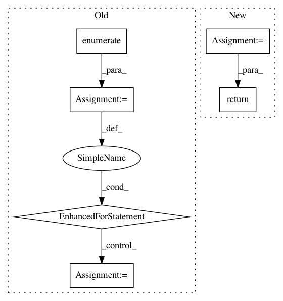

d01c5b805e49346914b3b5ace081cae8cbb2a99a,modAL/density.py,,information_density,#,32
Before Change
The information density for each sample.
inf_density = np.zeros(shape=(X.shape[0],))
for X_idx, X_inst in enumerate(X):
inf_density[X_idx] = sum(similarity_measure(X_inst, X_j) for X_j in X)
return inf_density/X.shape[0]
After Change
//
// return inf_density/X.shape[0]
similarity_mtx = 1/(1+pairwise_distances(X, X, metric=metric))
return similarity_mtx.mean(axis=1)
In pattern: SUPERPATTERN
Frequency: 3
Non-data size: 6
Instances
Project Name: modAL-python/modAL
Commit Name: d01c5b805e49346914b3b5ace081cae8cbb2a99a
Time: 2018-10-01
Author: theodore.danka@gmail.com
File Name: modAL/density.py
Class Name:
Method Name: information_density
Project Name: dit/dit
Commit Name: a1890b56835ef626b1a32edcaf28c1e2b10baa48
Time: 2015-03-19
Author: chebee7i@gmail.com
File Name: dit/algorithms/maxentropyfw.py
Class Name:
Method Name: isolate_zeros
Project Name: etal/cnvkit
Commit Name: 7f5ffac4a2d292e215142c56fe97dcf53be560d6
Time: 2016-01-06
Author: eric.talevich@gmail.com
File Name: cnvlib/smoothing.py
Class Name:
Method Name: rolling_median